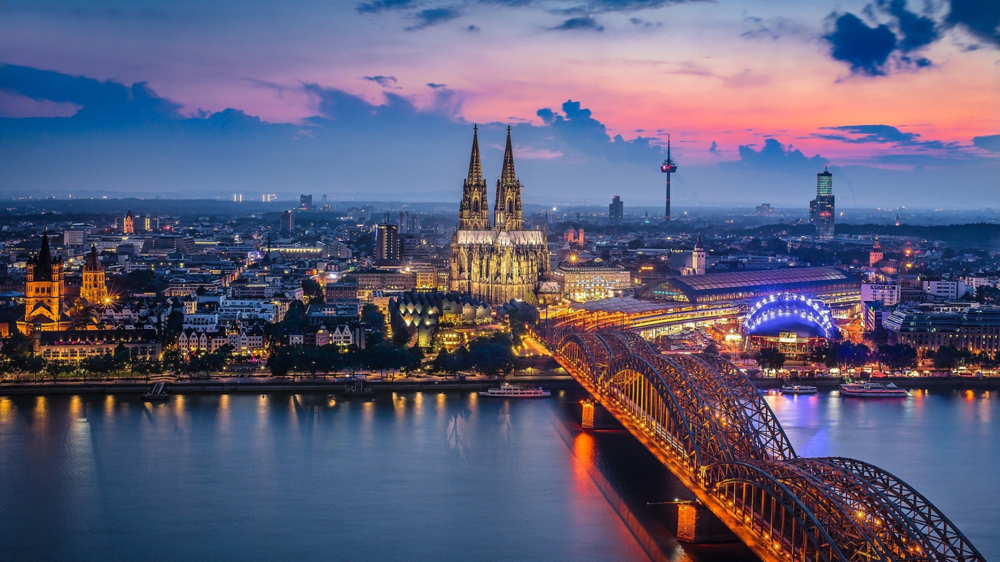
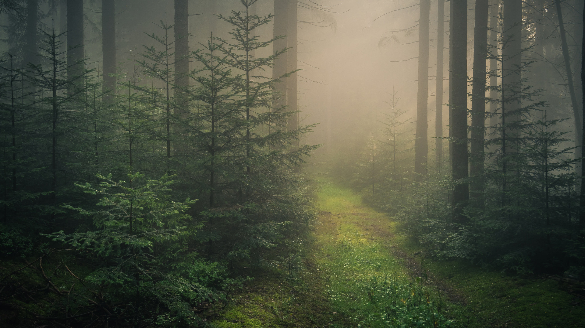
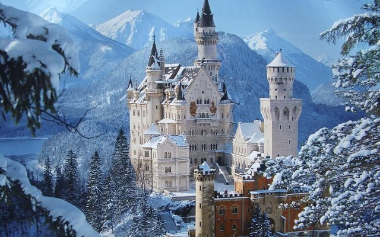
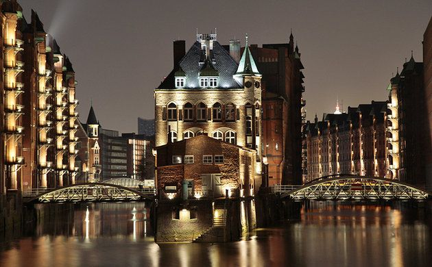
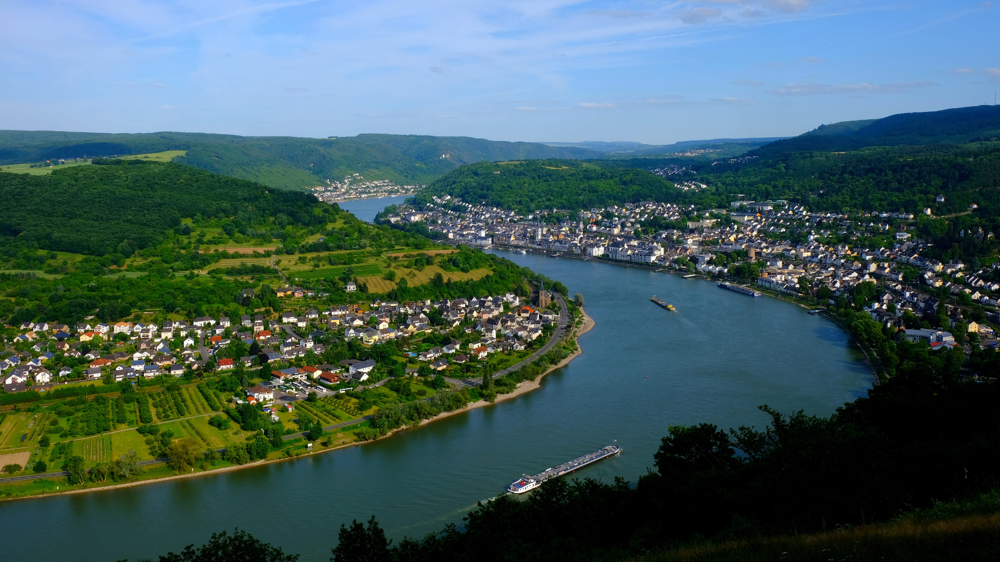

Top places to visit
1)Berlin's Brandenburg Gate

Modeled on the Acropolis in Athens and built for King Frederick William II in 1791, the monumental sandstone Brandenburg Gate in Berlin's Mitte district was the city's first Neoclassical structure. It measures an impressive 26 meters in height, which includes the Quadriga, the spectacular four-horse chariot carrying the goddess of victory perched atop this spectacular building.
Undoubtedly Berlin's most iconic structure, it's hard to believe that the majestic structure you see today was severely damaged during WWII. It was also once part of the infamous Berlin Wall and, for a few decades, was symbolic of the division of Berlin into East and West.
2)Cologne Cathedral (Kölner Dom)

The towering Cologne Cathedral (Kölner Dom), the Cathedral of St. Peter and St. Mary, is located on the banks of the Rhine and is undoubtedly Cologne's most impressive landmark. This masterpiece of High Gothic architecture is one of the largest cathedrals in Europe. Construction on this most ambitious building project of the Middle Ages started in 1248 and reportedly took over 600 years to complete.
As imposing as its façade, the cathedral's magnificent interior covers an area of 6,166 square meters and boasts 56 huge pillars. Above the high altar is the Reliquary of the Three Kings, a 12th-century work of art in gold that was designed by Nicholas of Verdun to house the relics of the Three Kings brought here from Milan
3)The Black Forest, Baden-Württemberg
The beautiful Black Forest with its dark, densely-wooded hills is one of the most visited upland regions in all of Europe. Situated in the southwestern corner of Germany and extending 160 kilometers from Pforzheim in the north to Waldshut on the High Rhine in the south, it's a hiker's heaven.
4)The Ultimate Fairy-Tale Castle: Schloss Neuschwanstein, Bavaria
The quaint old town of Füssen, situated between the Ammergau and Allgäu Alps and a popular alpine resort and winter sports center, is a good base from which to explore nearby Neuschwanstein Castle. This spectacular old fortress is widely recognized as one of Europe's most famous and picturesque royal castles.
5)Miniatur Wunderland and the Historic Port of Hamburg
In the heart of the historic Port of Hamburg, the magnificent Miniatur Wunderland, the world's largest model railway, is an attraction that appeals equally to young and old alike. Boasting more than 9.5 miles of model railway track, this massive scale model includes sections dedicated to the USA, England, Scandinavia, as well as Hamburg. It also incorporates around 1,300 trains, more than 50,000 microscopic lights, and in excess of 400,000 human figures.
It's not unheard of for guests to spend many hours exploring this fascinating world, with its remarkably detailed miniature airports, complete with planes that actually take off, as well as crowded cities, quaint rural scenes, and bustling harbors. For a memorable experience, book one of the behind-the-scenes tours, an especially fun thing to do at night.
Speaking of harbors, be sure to explore the vast Port of Hamburg while you're here. Covering 100 square kilometers, this huge tidal harbor is home to one of the world's largest cruise ship terminals, and is known as the Gateway to Germany. To make the most of your visit, note that the harbor is best explored by tour boat.
6)The Rhine Valley
The Rhine is not only Europe's most important waterway, it's also the most beautiful. With a total length of 1,320 kilometers, this magnificent river stretches from Switzerland through Germany all the way to The Netherlands.
While there are many places in Germany to enjoy this majestic river, the lovely Upper Middle Rhine Valley section, designated a UNESCO World heritage Site, is probably the most popular spot for tourists to visit. Here, this often dramatic 65-kilometer stretch of river boasts more than 40 castles and some 60 picturesque medieval towns all just waiting to be explored either by river cruise or by car